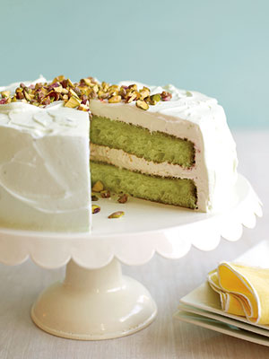

TWO LAYER PISTACHIO CAKE

Bake this moist cake for a potluck and it will surely be the talk of the party. Pistachio pudding mix will color the cake batter bright green.
Double recpie to make a 4 layer cake
MAKES: 16 PREP: 15min
BAKE: 35min CHILL: 60min
Ingredients
Cake
- 1 box (18.25 ounces) white cake mix
- 1 (3.4 ounces) instant pistachio pudding mix
- 3 eggs
- 1 cup vegetable oil
- 1 (12 ounces) lemon-lime soda (such as 7-Up)
Frosting
- 1 (3.4 ounces) instant pistachio pudding mix
- 1 1/2 cups milk
- 1 container (8 ounces) frozen whipped topping, thawed
- 1/4 cup chopped pistachio nuts, to garnish
Directions
Cake
- Heat oven to 350 F. Coat two 9-inch round cake pans with nonstick cooking spray. Line bottom of pans with parchment or waxed paper and spray again.
- In a large bowl, beat cake mix, pudding mix, eggs, vegetable oil and soda on medium-high speed for 4 minutes. Scrape down side of bowl after 2 minutes.
- Equally divide batter between prepared cake pans. Bake at 350 F for 35 minutes, or until a toothpick inserted in the center comes out clean. Cool cake layers in pans on wire rack for 15 minutes. Turn cake layers out directly onto rack and cool completely.
Frosting
- In a large bowl, beat pudding mix and milk for 2 minutes on medium-high speed. Fold in whipped topping.
- Place 1 cake layer on a serving plate and frost top with 1 cup of the frosting. Place remaining layer on top and frost top and sides. Garnish with chopped nuts. Refrigerate for at least 1 hour before serving. Store in refrigerator.
Enjoy!
Nutrition Information for pistachio cake:
Servings Per Recipe: 16
Per Serving: 414 mg sodium, 1 g fiber, 401 kcal cal., 44 g carb., 4 g pro., 43 mg chol., 23 g Fat, total, 5 g sat. fat